01 / 05
GAP
Global G.A.P.
Nemzetközi mezőgazdasági jó gyakorlat tanúsítvány – felelős termesztés, teljes nyomon követhetőség és élelmiszer-biztonság a komposzttól a betakarításig.
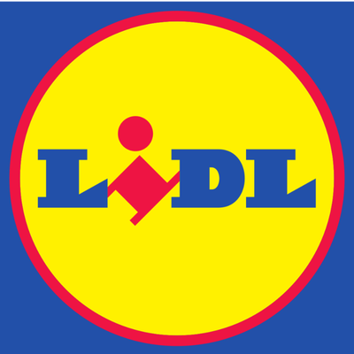
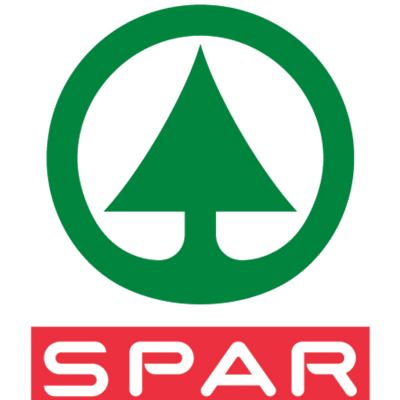
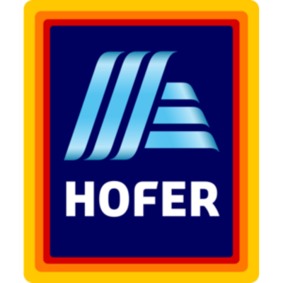
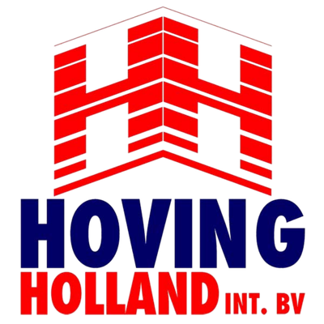
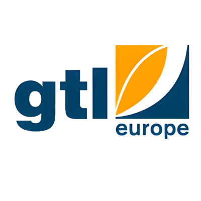
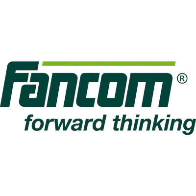
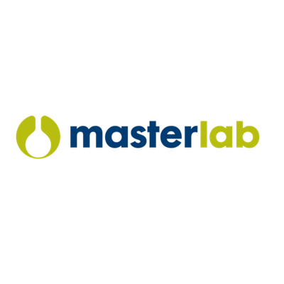
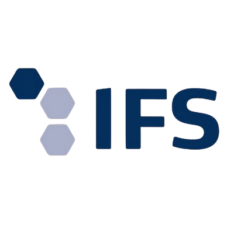
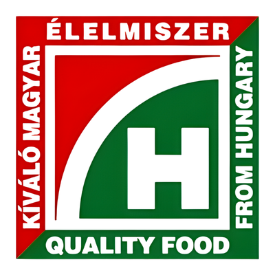
Az alapanyaggyártástól a kész termékig – négy kategória, egyetlen megbízható forrásból. Saját termesztés, saját labor, saját szállítás.
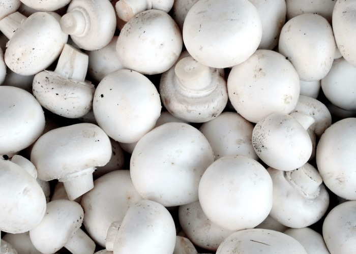
Fehér és barna csiperke, laska, portobello, shiitake, shimeji – 45 000 m²-en termesztve, szedés után 1 órán belül vákuumhűtve, saját flottával szállítva.
Termékeink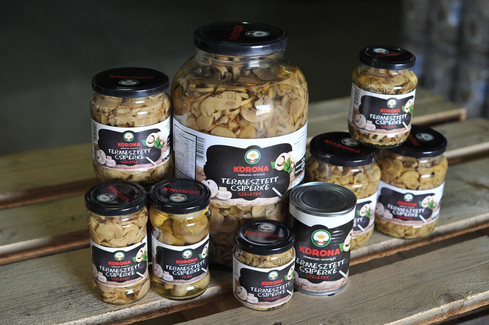

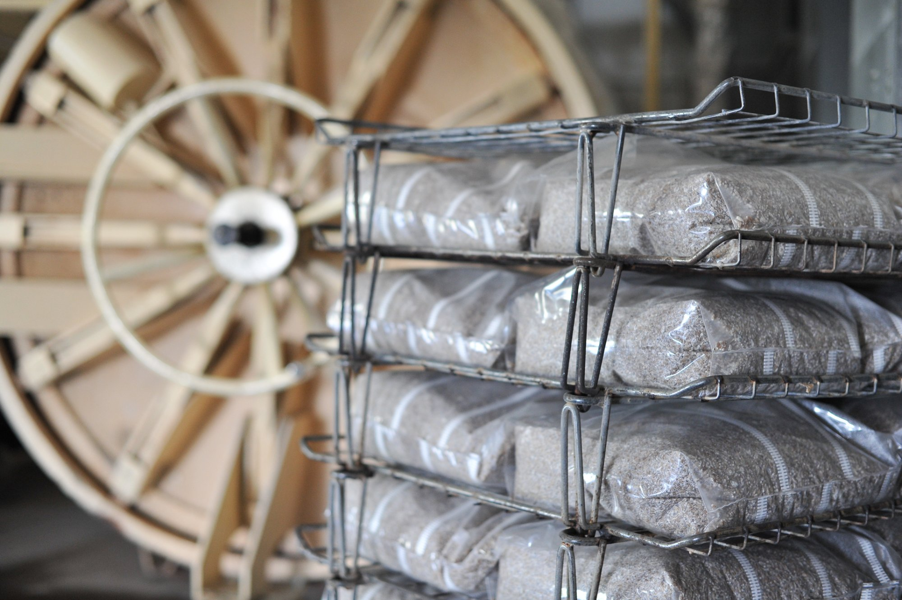
Személyre szabott ajánlatot adunk 24 órán belül.

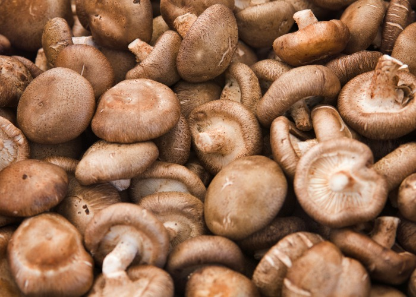
A Korona Gombaipari Egyesülést családi vállalkozások hozták létre azért, hogy a hagyományokra építve, de a legmodernebb technológiákat alkalmazva közösen fejlődjenek. Ennek köszönhetően mára Közép-Európa egyik meghatározó gombaipari szereplőjévé váltunk.
A teljes gombatermesztési folyamatot lefedjük: a szaporítóanyag előállításától és a komposztgyártástól kezdve a magas színvonalú termesztésen át a feldolgozásig – így garantáljuk a folyamatos, megbízható minőséget.
Több száz kollégánkkal és elsősorban hazai partnereinkkel nap mint nap azon dolgozunk, hogy termékeink frissen, kiváló minőségben jussanak el a magyar és nemzetközi piacokra. Folyamatosan fejlődünk: növeljük hatékonyságunkat, új technológiákat vezetünk be, és kiemelt figyelmet fordítunk a kutatás-fejlesztésre.
Célunk, hogy partnereinket mindig a lehető legmagasabb színvonalon, megbízhatóan szolgáljuk ki. Elhivatottak vagyunk abban, hogy minden egyes nap friss, biztonságos és kiváló minőségű élelmiszer kerüljön vásárlóink asztalára – mert hisszük, hogy a minőség nem kompromisszum kérdése, hanem felelősség.
Szenvedélyünk a gomba, és ezt a szenvedélyt visszük bele minden egyes nap a munkánkba.
Független, akkreditált auditok garantálják, hogy minden gombánk a legmagasabb élelmiszer-biztonsági és fenntarthatósági szabványoknak feleljen meg – a komposzttól a polcig.
Nemzetközi mezőgazdasági jó gyakorlat tanúsítvány – felelős termesztés, teljes nyomon követhetőség és élelmiszer-biztonság a komposzttól a betakarításig.
A vezető európai kereskedelmi láncok által elfogadott élelmiszer-biztonsági és minőségirányítási szabvány a teljes feldolgozási folyamatra.
Akkreditált független szervezet bio tanúsítása – a környezettudatos, vegyszermentes termesztés bizonyítéka az EU 2018/848 rendelet szerint.
A munkavállalók jogainak, biztonságának és tisztességes bánásmódjának független, gazdaságon belüli értékelése – a GLOBALG.A.P. szociális kiegészítése.
Élelmiszer-biztonsági kockázatok módszeres azonosítása és kezelése a teljes termelési láncban – a Codex Alimentarius szerint, minden folyamatba beépítve.
Saját Phase III komposztüzem – Közép-Európa egyik legmodernebb telephelye.
Steril laborban, saját gombacsírával – hibrid fajtákkal a legjobb hozamért.
~100 automatizált gombaházban, 45.000 m²-en, képzett szakemberek felügyeletével.
Vákuumhűtők, nagyteljesítményű osztályozó sorok – 1 órán belül hűtve.
Saját hűtős flottával, közvetlenül a partnerekhez – minden nap frissen.
Megbízható gombabeszállítót keres? Érdeklődik gombacsíra vagy gombakomposzt iránt? Írjon nekünk – 24 órán belül válaszolunk.